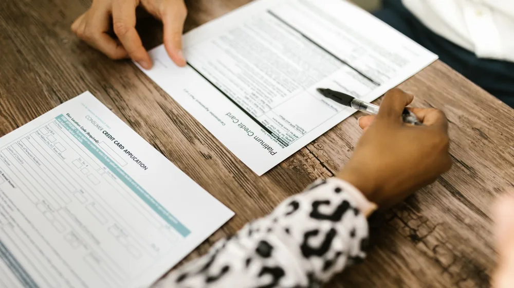

전세자금대출, 까다로운 조건도 한눈에! 나에게 맞는 최대 한도 확인법
사진: RDNE Stock project / Pexels (무료 이미지, 출처 표기)
전세자금대출, 나에게 맞는 상품 유형부터 확인하기

전세자금대출은 무주택 서민과 청년층의 주거 안정을 돕기 위해 마련된 상품입니다. 주택도시기금에서 지원하는 버팀목 전세자금대출, 청년 전용 버팀목 전세자금대출, 중소기업 청년 전세자금대출 등이 대표적입니다. 각 상품은 대상, 소득, 자산 조건이 다르므로, 본인에게 가장 적합한 유형을 먼저 파악하는 것이 중요합니다.
특히 정책 대출은 일반 시중 은행 대출보다 금리가 낮고 조건이 유리한 경우가 많습니다. 어떤 상품이 나에게 해당되는지 기본적인 요건을 확인하여 대출 선택의 폭을 좁힐 수 있습니다. 유형별 특징을 이해하면 더욱 효과적으로 대출을 준비할 수 있습니다.
주요 전세자금대출 상품별 조건과 한도 비교 (2024년 6월 기준)
많은 분들이 궁금해하는 주요 전세자금대출 상품의 핵심 조건을 한눈에 비교할 수 있도록 정리했습니다. 소득, 자산, 대출 한도, 금리 등은 변동될 수 있으므로, 아래 정보는 참고용으로 활용하시고 최종 조건은 반드시 공식 기관에서 다시 확인하시길 권장합니다.
참고: 위 표의 모든 수치 및 조건은 2024년 6월 현재 주택도시기금과 시중은행의 일반적인 기준으로 작성되었습니다. 개인의 신용 점수, 거주 지역, 임차주택의 조건 등에 따라 실제 적용되는 금리 및 한도는 달라질 수 있습니다. 정확한 내용은 주택도시기금 기금e든든 홈페이지 또는 취급 은행에 문의하여 확인하시길 바랍니다.
전세자금대출 신청 절차, 이렇게 진행하세요
전세자금대출은 일반적으로 다음과 같은 절차로 진행됩니다. 잔금 지급일 전에 여유를 가지고 준비하는 것이 중요합니다.
- 자격 확인 및 상품 선택: 위에서 비교한 내용을 바탕으로 본인에게 가장 유리한 대출 상품을 선택합니다. 주택도시기금 웹사이트(기금e든든)에서 자가진단을 먼저 해볼 수 있습니다.
- 서류 준비: 신분증, 주민등록등본, 가족관계증명서, 재직증명서, 소득금액증명원, 건강보험자격득실확인서, 확정일자 부여 전세계약서 사본 등이 필요합니다. 대출 상품 및 은행에 따라 추가 서류를 요청할 수 있으니 미리 확인해야 합니다.
- 은행 방문 및 상담: 선택한 대출 상품을 취급하는 은행에 방문하여 상담을 받고 대출 신청서를 제출합니다. 은행에서는 제출된 서류를 바탕으로 대출 심사를 진행합니다.
- 대출 심사 및 승인: 은행 심사를 통해 대출 가능 여부와 최종 대출 한도 및 금리가 결정됩니다. 심사에는 2주에서 4주 정도 소요될 수 있습니다.
- 대출 실행: 전세 잔금일에 맞춰 대출금이 임대인 계좌로 입금됩니다. 보통 은행에서 임대인에게 직접 송금하는 방식으로 진행됩니다.
대출 한도를 높이고 금리를 낮추는 실질적인 팁
전세자금대출은 목돈 마련에 필수적인 만큼, 한도를 최대한 확보하고 이자 부담을 줄이는 방법을 아는 것이 중요합니다. 다음 팁들을 참고해 보세요.
- 신용점수 관리: 대출 심사 시 신용점수는 매우 중요합니다. 평소 연체 없이 신용카드를 사용하고, 부채를 적절히 관리하여 높은 신용점수를 유지하는 것이 유리합니다.
- 우대금리 조건 확인: 다자녀 가구, 신혼부부, 고령자, 특정 주택 유형 등 대출 상품별로 다양한 우대금리 조건이 있습니다. 본인이 해당하는 우대금리 요건을 꼼꼼히 확인하고 증빙 서류를 준비하면 금리를 추가로 낮출 수 있습니다.
- 전세계약 시 유의사항: 계약 전 등기부등본을 통해 근저당권 설정 여부, 임대인의 신용도 등을 확인하는 것이 중요합니다. 또한, 전세보증금 반환보증 가입 조건에 맞는 전세집을 선택하는 것도 향후 안전성을 높이는 방법입니다.
전세자금대출 시 꼭 알아야 할 주의사항
대출 신청 전 반드시 확인해야 할 몇 가지 주의사항이 있습니다. 이를 간과하면 대출 실행에 어려움을 겪거나 예상치 못한 손해를 볼 수 있습니다.
- 전세계약서 확정일자: 전세자금대출 실행을 위해서는 전세계약서에 확정일자를 받아야 합니다. 이는 전세보증금을 보호받는 데 필수적인 절차입니다.
- 임대인의 동의 여부: 일부 대출 상품은 임대인의 동의가 필요할 수 있습니다. 계약 전 임대인에게 대출을 받을 예정임을 미리 알려 동의를 구하는 것이 좋습니다.
- 전세보증금 반환보증 가입: 전세보증금 미반환 사고를 대비하여 주택도시보증공사(HUG)나 한국주택금융공사(HF)의 전세보증금 반환보증 상품에 가입하는 것을 강력히 권장합니다. 이는 선택이 아닌 필수적인 안전장치로 고려해야 합니다.
- 대출 심사 기간 확인: 대출 심사 기간은 은행과 상품에 따라 다르며, 서류 미비 등으로 길어질 수 있습니다. 전세 잔금 지급일에 맞춰 대출이 실행될 수 있도록 최소 한 달 전부터 준비하는 것이 안전합니다.
전세자금대출은 복잡해 보이지만, 조건을 명확히 파악하고 절차에 따라 준비한다면 충분히 활용할 수 있는 유용한 제도입니다. 공식적인 정보를 항상 최우선으로 확인하며 현명하게 대출을 이용하시길 바랍니다.
🔗 이 글도 함께 보면 좋아요: 카드론? 현금서비스? 헷갈린다면 손실 피하는 선택 전략